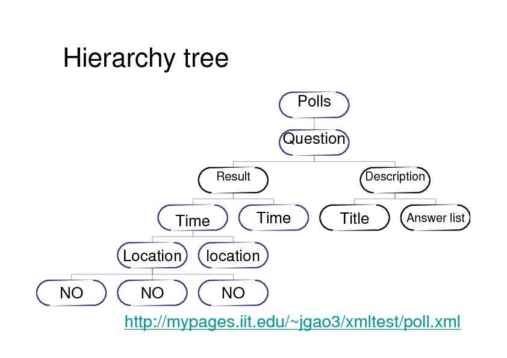
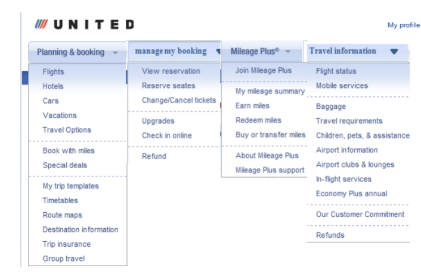

Coding academic data from table into XML document
Polls is the root element. Question is the first level child element, followed by result and question description as second level element.
On one side, the subsequent elements of result are time, location, and no. On the other side, the subsequent elements of description include title and answer list which indicates the specific information of question. Such a hierarchy tree is constructed following three basic philosophies: simple, extensible, and untouched.
Redesign for United Airline Website
This project targeted to redesign the global navigation system of United Airline.com. The scenario is as if united airline wants to expand its globalization market, whats the positive and negative side of the existing basic labels?
The focus is about the consistency of an airline website targeting global market.Based on the results collected from multiple methods: card sorting, heulistic review, and competitive analysis, I used photoshop to redesign the global navigation system.